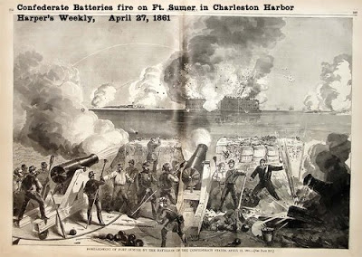

Reactions to the Olofson appeal decision continue to roll in. Go here to read Peter's at Western Rifle Shooters Association. He says:
Tuesday, May 5, 2009
A Simple Matter of Force
David (Codrea) announces the affirmance of David Olofson's conviction.
WND covers the matter.
The Sipsey Street Legal Advisor notes his thoughts.
And here are mine:
1) We are now (and actually have been for some time) down to a simple matter of force between those who support ever-burgeoning government power and those who oppose such totalitarianism. The concept that the Constitution, the so-called "conservatives" on the Supreme Court, fundamental fairness, or any other check on Leviathan's power has any relevance to the nuts-and-bolts of everyday life in today's America is a dangerous anachronism. Distrust automatically anyone who tells you otherwise.
2) Given that Leviathan can now, among other things, try and convict men for possession of an automatic weapon but yet not have to disclose the manner by which it was determined that the firearm in question was actually capable of automatic fire, don't think that any semi-automatic firearm in your possession can't also be the basis of a felony conviction.
3) The term "a simple matter of force" refers not only to the power of Leviathan, but, more importantly, also to the rules now in effect. The rule of law was established so that disputes between parties could be addressed without resorting to violence. Look over the past nine months and tell me -- logically and factually -- how it can still be argued that the Federal Government is still bound -- in any arena -- by the rule of law.
Alea iacta est.
The die is cast.
Pete has a way of getting to the uncomfortable nub of things in fewer words than I can. But for some, it is not enough that the die is cast. They wish it to be struck, and struck quickly. I received this response to my post on Olofson:
Anonymous has left a new comment on your post "Olofson Appeal Rejected: 7th Circuit Confirms No R...":
Mike,
Why are we still not shooting?
I know you've said no Ft. Sumters and that we would know when the time had come by one action.
Why is this not it?
Remember the scout sniper who said he would get 100 for you?
How is Mr Olofson less of a canary in the shaft than you?
The ATF has proven in this case and the ongoing crap with Mr Savage that they have no interest in objectivity. WHATEVER they want to deem full-auto will be. They will do whatever is necessary to make it so.
Why do we allow them to RULE over us when they have no interest in being answerable to us?
"Why are we still not shooting?"
Well, I'll tell you why. There are a million reason but I will give you a few of the ones I think most important.
Because our hand has not yet been forced. May I remind everybody of something that most who revere the "shot heard 'round the world" tend to forget? Captain Parker's company HAD PULLED BACK FROM CONFRONTATION WITH THE BRITISH REGULARS AND WAS BACKING UP EVEN MORE WHEN THE SHOT WAS FIRED. Why? Because their muster was intended to make a point, not start a war. Not then. Not there.
If I may summarize the silent statement of these men under arms: "We defend this village. Leave it in peace and we will leave you in peace." In modern parlance: "Don't start nothin', won't be nothin'."
Everyone knew they were headed for Concord. Hancock and Sam Adams had already flown the coop (although Paul Revere was dragging a trunk of secret papers that had been left behind across the back of the green and into the woods beyond). For months, many other marches such as this had been harrassed (as the British saw it) before this day. Once, two militia cannon were emplaced at the end of a bridge to deny the Regulars access. The lobsters took one look and very gently turned around and marched away. No shots fired. Point made, point taken.
Yet at Lexington the shot was fired. No one knows to this day who fired. In order of probability: a British officer firing deliberately; a British soldier with an AD ("Accidental discharge" in current terms, although a certain sergeant in the 101st Airborne says "AD" means "asshole discharge."); a skulker on the sidelines of one political persuasion or another who wanted blood to be spilled. Take your pick, but the point is Captain Parker sure as hell didn't give that order. Thus everything that happened afterward WAS SELF DEFENSE UPON THE PART OF THE COLONISTS. They did not return fire until their hand was forced. Perception of legitimacy: colonists.
At Fort Sumter, the South Carolinians fired when they did not have to. Perception of legitimacy: Lincoln.
Starting to get the picture?
We are not ready. Not politically, not militarily. I don't know about you, Anonymous. Are YOU ready to take on an even greater military force than the British Empire of the Eighteenth Century? I'm not. No one I know is. Well, there ARE a few folks up in Winston County. ;-) Anyway, FEW people I know are. The Minutemen and common militia at Lexington and Concord and long road back into Boston had been preparing for YEARS. Read General Galvin's book, The Minutemen. The ability to blunt and harry a British column was not an accident. I tell you plainly, WE ARE NOT READY. The military groundwork has not been laid. The political groundwork has not been laid. We are not ready and you want to start something that will make our defeat easy?
"A long train of abuses and usurpations." When did Jefferson write those words? MORE THAN A YEAR AFTER LEXINGTON. Olofson's case certainly falls into that category. But it is not yet time. This fight, if all else fails politically to prevent it, MUST be undertaken reluctantly. We must accept the burden of the abuses and usurpations as long as they can be borne, so that when we round on the whipmaster and feed him his whip it will be seen as justice by as many onlookers as possible. The Regulars MUST march out of Boston of their own accord. They MUST fire the first shot. Or the second. Or the third. THEN, and ONLY then, we will finish them and their tyranny. If they pass laws to accomplish this (they think) without direct confrontation, we will defy the laws and goad them into attempting to force us to comply. Think Boston Tea Party. Their whole system depends upon willing subjects. They don't react well to defiance. They WILL give us the moral high ground. Their appetites will demand it.
Because what happens the moment after that shot is fired is so horrible than any sane person would do anything to avoid it. I have NO patience for someone who WANTS A FIGHT. It usually means they've never been in one. Do you understand what horrors await us all after that terrible moment? Have you ever seen the bloated bodies of children on the road? Entire neighborhoods in flames? Heard screams of dying innocents in the night? Smelled roasting flesh of men, women and children, people, innocent people, even as you, or me, or our loved ones?
I doubt it. But you know what? Neither have I. My son has. But I have not. Still, I am smart enough to understand that that's what happens when you open up the Pandora's box of civil war. Why wouldn't you do everything in your power to put that off as long as possible, until you could not delay a second longer this side of defeat and slavery?
Those are some of the reasons I can think of. There are others.
Yes, the die is cast. The prospect that we will get out of this without a fight diminishes with every passing day and every power grab of this administration.
The die IS cast, but THEY MUST STRIKE IT.
Not us.
Them.
Our would-be tyrants.
Being a Christian has its solaces and one of them is the realization that all of this is in God's hands. We must stand, but the outcome is subject to His will. What will happen, is what will happen. But we do not serve God or man or the Founders' Republic or even our own selfish prospects for victory if we fire first.
No Fort Sumters.
No. Fort. Sumters.
NO FORT SUMTERS.
Not if you want to win. Me, I'd like to win. How about you?
30 comments:
I couldn't agree more. That the other side (or, more accurately, some people on the other side) deserves it is of no consequence. Open rebellion, taking shots at federal officers and others, is a HUGE step to be taken, and if there is a right time for such an action, now isn't it. Doing something now, while we still have redress in the courts and the legislature (however imperfect both are, and make no mistake - both ARE mightily imperfect) is to brand our entire cause as a criminal enterprise, and to therefore damn the cause of liberty for generations to come.
Prepare. Get in shape, buy guns, ammo, mags, components, clothes, etc., accurize and/or make more dependable your existing guns, practice your marksmenship from stationary positions and on the move, practice small unit tactics with friends (REAL friends, not those who will inform on you and yours at the first sign of pressure), set up caches, etc., etc. The more prepared we are, the more the other side will know it, and the less likely that they'll try something massive. Also, get involved politically - at least for now, there still is a political process that allows for us to participate, and we are damned if we don't. For to enter a fight while not having done everything possible to avoid it is the height of immorality.
I believe that a fight is coming. When? I don't know, maybe not in my lifetime (I'm somewhere between 35 and 55). But let the other side start it - let them make our cause just, because that makes victory more likely and the likely cost lower,
well, a international firearms registration treaty certainly reads like force, and when it is being enforced, that will assuredly call for force. unsurprisingly so: government, washington said, is force -- a dangerous servant and a fearful master.
we're not being fired upon with bullets, nor bombs, but rest assured we are being fired upon. we are paying -- in taxes surrendered under the threat of force -- for the treatment afforded us. we watch our children abandon the family to consent to this and other collectivist practices.
there has yet to be a serious tea party, but it will come, and it will not meet the approval of the imperial neoconservative nor neoliberal.
still, no one individual need force the issue, for it does indeed rest in god's hands -- and the nature of such is that they arise in the marketplace of ideas, when their time has come, and vent into society with great force all of their own. do not admire and covet it, but follow the swath, for the way out is through, not against.
Mike,
I posted that previous comment.
I agree with everything you have said.
I acknowledge we are being goaded.
David posted that this isn't being covered in the MSM.
When these kind of things are presented in the MSM, the person doing it is always portrayed as some kind of nutter. Look how quickly we all distance ourselves from what ever affiliation the deed doer is accused of.
McVeigh: Well he was a racist.
The guy in Pittsburgh recently: He was a crazy looking for a fight.
Olofson (on AR15.COM): "He knew what he was doing, he deserved it" mentalilty.
The point I am trying to make is; we would like the moral high ground. But it really doesn't matter how much we perceive ourselves to be in the right. We will be portrayed by the MSM as being in the same boat as the above examples and even our friends will distance themselves from us.
They have divide and conquer down to an art form.
This moral high ground you seek will be eroded below you as soon as you (we) fire a shot.
Mike, I am a brother in arms, in Christ, in freedom. But at this point all I see is a pot we are all in being raised in temperature quickly. Quicker now than when Bush was in power but with the same end result.
Our freedom loving mindset is being beaten and bred out of existence. (Don't read any eugenics inference here, none implied)
Yes I want to win. I want to win more than anything. But like in the Matrix, the people surround us on a daily basis who have not waken up to the truth will treat us as enemys. And I'm not sure we can every wake enough of them for it to matter.
At this point, I'm not sure I ever see us winning and blood starts to look like my only solace.
Fraternally yours.
Chris
Another gem, sir.
I seriously doubt you'll see this one highlighted at http://www.csgv.org/site/c.pmL5JnO7KzE/b.5015479/k.8775/Guns_Democracy__Insurrectionist_Idea.htm
They only cherry pick the posts that fit their agenda.
At Fort Sumter, the South Carolinians fired when they did not have to.
"Perception of legitimacy: Lincoln."
Precisely, set up by him for the express purpose.
Lincoln Instigated The Firing On Ft. Sumter
http://www.namsouth.com/viewtopic.php?t=98&highlight=ft+sumpter
"You and I both anticipated that the cause of the country would be advanced by making the attempt to provision Ft Sumter, even if it should fail; and it is no small consolation now to feel that our anticipation is justified by the result. "
Lincoln, Letter To Gustavus Fox on 1 May, 1861
"He (Lincoln) himself conceived the idea, and proposed sending supplies, without an attempt to reinforce giving notice of the fact to Gov Pickins of S.C. The plan succeeded. They attacked Sumter it fell, and thus, did more service than it otherwise could."
Senator Orville Hickman Browning's diary dated July 3, 1861
(Lincoln's personal and political friend)
It doesn't matter who we are individually, we all have a skeleton in our closet that will be branded upon us whenever the time comes.
Tax Cheat, Racist, Anti-semite, you get the idea. We 3% are not lilly white.
There is no way to wake the sheeple.
This is why I pray for a viable secession movement in Montana/Alaska/Texas. Give me a place to move where I can live unmolested.
I said a similar thing on Warriortalk, a gun board hosted by Gabe Suarez. I was told I wasn't "A red blooded American"
I can think of no higher complement.
The Founding Fathers made the decision that being a free man was more important than being an "Englishman".
Until statists can make the same determination they will never understand.
I value freedom over order. I am an American as long as the American system protects my rights, when it fails to do so I will be a follower of whatever country best does.
As to Brock's assertion.
The same could be said about FDR.
We purposefully cutoff Japan's oil in Southeast Asia.
I admit to being scared. I admit to having been scared for quite some time. But the phrase you used: "...live my life so my death is a homecoming..." has buoyed me as no other.
Resistance to tyranny is obedience to God.
III
Sorry, J. Croft, edit the insults out and you might get posted. As it is, get your own blog. Interesting IP address.
Vanderboegh
The masses aren't hungry or cold or wet enough. The PTB are definitely leading us to that road. Until The People are uncomfortable with living conditions we haven't a chance.
I am so ready to draw blood and I haven't the means at this point to continue stocking up thanks to this administration. But I wait. I know that the time is not now. Yes they keep turning up the heat on us, Yes we keep giving a little ground, yes they keep thinking that we aren't going to do anything. They aren't right.
One area that we desperately need is some form of organization. I think the safety committees are the ticket but somehow we also need to keep the whole thing under the radar. Our ancestors had the advantage of slow moving information. We don't have that luxury. Everything moves faster and further today. We have to adapt.
No answers here but many questions.
Full agreement.
To both sides.
The heat is being added and we don't have the means to maintain the high ground.
The People aren't hungry enough, cold enough, wet enough, without shelter enough, or BORED enough to support those of us that are standing by. I pray that this administration is able to pull off whatever agenda they actually have as then I think the people will see that we NEED TO REBEL.
Divided we stand, together we rise. A motto from the IRA that sings in my head on occasion. I think it applies to us.
I see the phrase "I'm not backing up any farther" a lot. I use that phrase. I mean it. Certainly I would rather not have any trouble at all. It looks as if trouble will come looking for US. I think we'll all have the opportunity to be statutory felons with the AW ban renewal or the international small arms treaty. Then we'll see how much is to be control through mere intimidation and example-making and how much is to be control through physical force against us.
"The die" is half of a pair of dice. They're playing craps with the Constitution, and the gaming piece is loaded in their favor. We don't get to roll, we can only see how it falls when THEY throw (cast) it. Obviously we're paying close attention. That matters. We won't be surprised in any military, tactical sense. We know too well how they think.
from what i have gathered so far from this commentary, the issue at hand is that the majority of us give credit to the MSM for painting the picture of the current state of affairs, as well as the next one, as well as historical ones.
fair enough, given the evidence of our eyes. however: stop this.
stop thinking of this in a defeatist sense, yourselves, and file the facts away to act upon.
but more importantly, act: stop it! put an actual end to this devious practice of theirs: help provide the unorganized militia propaganda corps with a greater level of influence in society. forget independent or objective retelling, accept that humankind is dogmatic and not doctrinaire. if belief and opinion governs us all, then let us clear the air of lies upon lies, set a good example, and let the beliefs follow.
if we can accomplish this, we have already won.
for every little thing the MSM flat out gets wrong or intentionally misrepresents, there is work to do.
for every piece of trash on their streets, the open-carry free state folks in new hampshire are picking it up. where is the clutter in the political sphere?
we, too, can redefine what it means to control guns.
we, too, can redefine what it means to put an end to gun violence.
our beliefs stand for life, love and liberty. our god is The God. their god is, who, or what?
do they even know?
I thank you for the cautionary statements.
I read a book in which Arthur asks Lancelot (I believe) to give him the summation of their lengthy war. "Half a baby in a ditch."
That is what comes to my mind every time I consider the Possible.
Let us wait as long as we can. Because even those who have been there, done that - don't wish to do it again...
"One area that we desperately need is some form of organization. I think the safety committees are the ticket but somehow we also need to keep the whole thing under the radar. Our ancestors had the advantage of slow moving information. We don't have that luxury. Everything moves faster and further today. We have to adapt."
An excellent idea, I believe.
Alarm & Muster
http://www.alarmandmuster.com/
"Being a Christian has its solaces and one of them is the realization that all of this is in God's hands. We must stand, but the outcome is subject to His will. What will happen, is what will happen. But we do not serve God or man or the Founders' Republic or even our own selfish prospects for victory if we fire first."
Amen to that. As a young father of 3 innocent and beautiful lives, I pray that God stay's His hand and keeps us all from this. However, being a student of history and listening to my father who trained me, I know that God was present at the Revolution and that it still happened - this gives me some comfort. I know that whatever happens, I can rely on Him to give me the strength I need to follow my convictions, utilize what I have been taught by my father, and do the right thing for my family or my nation.
I pray we will win in the 'soft war' and He will soften the hearts of many and bring them an awakening of the danger our nation is in, but if it ever comes to the ugliness -God forbid - , I pray that God strengthens us all.
No Fort Sumpters. Keep to the high road.
~Fawkes
"Because what happens the moment after that shot is fired is so horrible than any sane person would do anything to avoid it."
Thank you. I have been wondering about some of the threepers and I really hope they take the above to heart. A shooting war is the last recourse for honorable men and it is something I fervently hope my wife and kids will never have to see.
I do not worship your gods and I do not count on divine intervention or providence. My reason, understanding of history, human nature and the mathematics of chaos tells me that this is a battle best won by willingness to fight. If they think I am bluffing and the bullets fly then only the carrion eaters will win -- at least in the short run.
Bobo's popularity is mostly a product of a lapdog media and a small but well organized cadre of Bobots. If (when) the guano really hits the turbine those approval ratings will disappear like saccharine in hot coffee leaving behind only a bad aftertatse. The odds still favor "our" side. They have to win; We only have to not lose.
As Rev. Jonas Clark, a preacher, Patriot and eyewitness of the Battle of Lexington put it, it's absurd that 60-70 colonial militiamen would start a fight with 800 crack English troops.
My pastor read Rev. Clark's account of April 19th as part of his April 19th Patriot Day sermon, "Render Unto Caesar; Render Unto God"
http://www.chuckbaldwinlive.com/sermonvideo.php
Structure creates targets.
The only organization that is needed operationally is a small and trusted group of men and women, each of whom would die for the other.
Because you'll have to....
Brock, interpret this please.
//////////////////
A CALL-TREE TEST FOR THE ALARM & MUSTER HAS BEEN INITIATED
AT 7:30 PM EST FOR THE FOLLOWING REGIONS:
MIDWEST
SOUTH
SOUTHEAST
ALARMANDMUSTER.COM WILL RETURN AFTER THE CALL TEST IS COMPLETE!!!
With Montana's passing of their "guns made here are NOT under federal jurisdiction law, the discussion of what may or may not be a Fort Sumter class incident or how long people put up with usurpation after usurpation and abuse may be moot in short order.
Surely, if the feds raid or fire upon on Montanan law enforcement or citizens who are acting within the confines of Montana law, they will have fired the second, "shot heard round the world", wouldn't you think?
Montana very well could find itself being the second "Lexington".
Personally, I can assure folks that I have no personal desire to experience the privations of prolonged field action. But if it comes down to it, and daily my prayers are that it does not, there are only two ways home: Victory or death.
Mk. 106 has left a new comment on your post ""A Simple Matter of Force": Olofson, Legitimacy & ...":
"I have never been a soldier, and naturally have never seen war. I have however, studied war and military history in one form or another since I was 8 years old, reading history books in grade school when I was supposed to be doing my classwork. I think Mike is walking a very dangerous path, but from what I read here, I think he is a good man. He is dead right when he says that anybody who WANTS this fight is a fool. A fool and his life which may soon be parted. Here is what I see. ALL of the momentum is on the leftist's side. Victory against them in any arena, be it political or military is impossible at this point. But at some point, when they reach the absolute peak of their power, somebody will start shooting. The shooting will be sporadic and unorganized and everybody involved will DIE. Depending on th ecircumstances, I may be one of them. But ONLY when I am forced to stand between them and those that I love. After that example is set, no one will think of shooting again for along time. Until the starvation. Until the camps. Until the purges. Until western civilization has collapsed to the point that the state can no longer sustain itself, and weakens to the point that it is finally vulnerable to uprising. Then, only then, if there are any people left with the spirit and the means to fight, could the state be defeated. But the mechanism to prevent that will already be in place. Islam."
MK. 106: Why do don't you just go ahead right now AND SLIT YOU'RE FRIGGING, DEFEATIST WRISTS? -- Vanderboegh
Now that everyone has thrown in their two cents, here's mine. All the good intentions and preparations in the world are not going to prevent what I see happening. Their are millions of people,temperments,situations. Someone,somewhere,sometime, it's going to flare up on its' own, like a lightning strike in the deep woods, and no one will be able to control it. Sure, it could be set up by either side, and usually is, but there are so many variables, so many powderkegs to ignite, it's inevitable. An accident waiting to happen. III.
In Luke 22:, verses 36-38 seem to conflict with verses 49-51. But they reaffirm the message in Mike's response to which we here refer.
In his own words, our Lord said, "As of today, whenever you follow me, you will be an outlaw in need of defending yourself from the world." His words, "Suffer ye this far" (v. 51) said in four words everything Mike said in his response to anonymous.
As Christians, we must hold the moral high ground by avoiding aggression. Those who live by the sword will certainly die by the sword. Our object in war is to make the other guy bleed, but only in self-defense.
As Anonymous (24th comment) brought living and dying by the sword into the discussion, I would offer this for consideration instead:
In preparation of the defense of self, others, and the Constitution against those who would enslave a free people, I would offer these verses of Scripture for those who profess Christ:
Psalm 144:1-2: 1. Blessed be the Lord my strength, which teacheth my hands to war, and my fingers to fight. 2. My goodness, My mercy, and my fortress; my high tower, and my deliverer; my shield, and he in whom I trust; who subdueth my people under me.
These happen to be very appropo for the times....and we should be learning to war and fight...
We should not strike first, this is sound. The South lost because they struck first, as Mike has so studiously pointed out on more than one occassion.
However, as to avoiding aggression, no we should fight as lions when the time comes. Timidity and its cousin Complacency kills; and we should be praying daily that God intervene, because this war will be fought here, in our home towns.
As for dying by the sword, well, it's better than dying of cancer, and to para-quote a real Hero of the War of Northern Agression, General Thomas Jackson, CSA, "The Lord has appointed the time of my death; nothing can change that. I am as safe on the battlefield as I am in my own bed."
Thank you for expressing what I have been trying to explain to so many. War is a horrible thing, civil war doubly so, and yet people who have never had a shot fired within miles of them are advocating it.
"Unsufferable" means exactly what it sounds like, and as long as there is a *chance* to change things in the way outlined in the constitution, we should pursue peaceful means.
Make no mistake though, people will vote their conscience, either with a ballot or a bullet if the ballot is denied.
The war, or "second shot heard around the world" are not as likely as some fear.
Remember this, most of us are peaceable and only want to be left alone with our rights intact. So, we are not anxious to do something so horrific as start a shooting war against our own.
Now remember a couple more things. Waco and Ruby Ridge. That's right, another Waco or Ruby Ridge will not start the shooting war. Why? Because, just like the first times, it will not be known until after it is over and the thugs have fled back to their lairs that what they did was outside the law and criminal. By then the propaganda machine will have convinced the majority that what they did was reasonable and justified. Remember?
That didn't fool some of us, but remember how we were vilified and marginalized? Remember how long it has taken most of those who now see it as we saw it?
No, this will be a war that is not fought until the most timid of us has lost all hope. Sorry, but that is the way it is.
Some of us may run out of patience, but we will be considered lunatics and buried in ignominy. Tough town that ignominy.
"Personally, I can assure folks that I have no personal desire to experience the privations of prolonged field action. But if it comes down to it, and daily my prayers are that it does not, there are only two ways home: Victory or death."
////////////
Well said sir.
I was thinking of your Fort Sumter ref when I wrote in Push (a March entry at my blog):
'They will see how far they can push us to violence. These Freedom suckers want us to trip ourselves. Our enemies desire us to perform some egregious act that would precipitate crackdown. We must endrun THEM.'
Perhaps it's easy to say 'prepare for the worst and hope for the best'. Or perhaps not.
Or they deconstruct, we reconstruct.
The question is not who has fired the first shot, they have: Ruby Ridge, at Waco. Our only question is how will we respond to the next Ruby Ridge. I know how we responded to the others. When we did nothing, McVeigh did it for us. Is that the way we want it to go again?
As to moral high-ground it is taken like any other military objective, you win the battle first and write the history second. Until then, we are all criminals. Get used to it.
Post a Comment